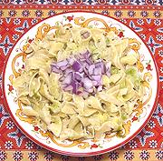

|
Cabbage with NoodlesPoland - Kapusta z Kluski | ||||
| Serves: Effort: Sched: DoAhead: |
4 main ** 35 min Yes |
Many years before Clovegarden, even years before the Internet, I reconstructed this recipe from childhood memory - it was one of my favorites. | |||
| None of my Polish cookbooks include this recipe - too "peasanty"? Today, with the Internet, I can find recipes called "Haluski" from Polish communities in Pennsylvania and Wisconsin, some of which match my childhood memories from Connecticut. | |||||
|
1 5 8 ar 1/3 1 1 1/2 1/2 |
# oz oz c t t t c |
Cabbage, white Onion Egg Noodles (1) Water Butter Caraway Seeds Salt Pepper Sour cream (2) |
Prep - (10 min)
|